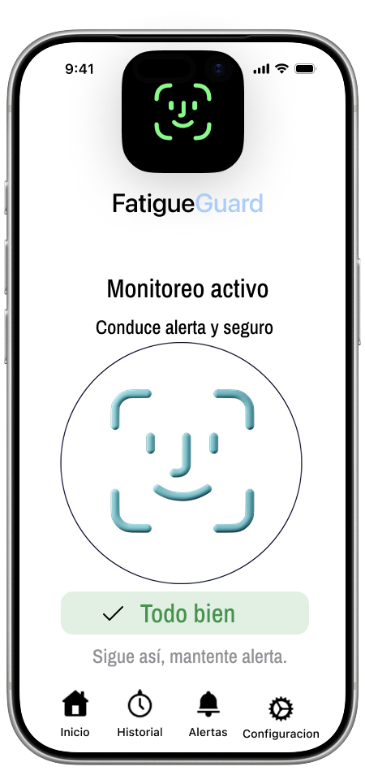
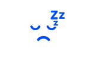
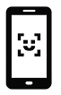
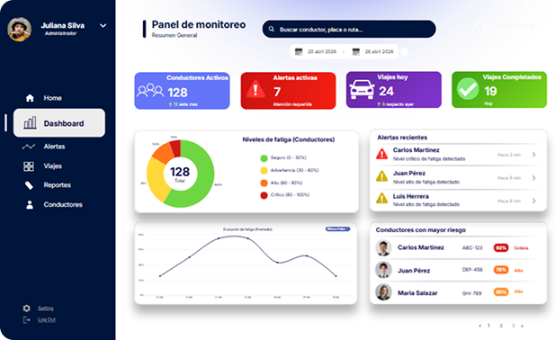

40%
Reducción estimada de
incidentes por fatiga
FatigueGuard detecta signos de fatiga y somnolencia en tiempo real para ayudarte a prevenir accidentes y proteger tu vida en cada viaje.
Disponible para Android e iOS

Reducción estimada de
incidentes por fatiga
Empresas confían
en nosotros
Conductores protegidos
cada día
Monitoreo en tiempo
real
La fatiga al volante es una de las principales causas de accidentes de tránsito.

La falta de sueño y el cansancio acumulado reducen los reflejos y el tiempo de reacción.
Los microsueños y la distracción al volante pasan desapercibidos.
La fatiga aumenta hasta 6 veces el riesgo de sufrir un accidente grave.
Pérdidas humanas, daños materiales y altos costos para empresas y familias.
FatigueGuard te ayuda a mantenerte alerta y seguro en cada viaje.
Nuestra IA analiza tu rostro y comportamiento para detectar signos de fatiga y somnolencia.
Recibe alertas visuales y sonoras para que tomes acciones a tiempo y evites riesgos.
Funciona 24/7 en segundo plano brindándote monitoreo confiable todo el viaje.
Viaja seguro, protege tu vida, tus pasajeros y a quienes más importan.

Abre la app y comienza el monitoreo facial
Analiza en tiempo real tus ojos, parpadeos, cabeceos y expresiones
Si detecta signos de fatiga, la app genera una alerta inmediata
Te menciona alerta, conduces seguro y llegas a tu destino
Monitorea a tus conductores en tiempo real y toma decisiones basadas en datos.
